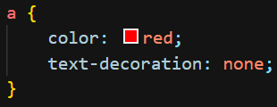
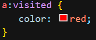
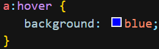

Como já vimos, é possível formatarmos tags diretamente, por seletores ou não, uma delas é a tag de link:
Porém, é possível realizar uma formatação mais complexa em outras 3 estados, que você verá abaixo.
Usaremos projetos anteriores como links, para a formatação dos exemplos.
Links não visitados
Se trata do exemplo anterior. O link ficará com uma cor padrão quando não visitado.Exemplo:
Aula de Block e inlineLinks visitados
Utilizado para aplicar diferenças no link quando ele já tiver sido visitado.Estado e exemplo:
Hover Link
Utilizado para aplicar alguma diferença quando passar o mouse pelo link.Estado e exemplo:
Active link
Utilizado para realizar a alterção do link, como por exemplo a cor, ao clicar ou segurar ele.Estado e exemplo:
De todos os citados, o visited na maioria das vezes possui a mesma formatação do principal (link).
Abaixo, veja os elementos aplicados no menu que criei.